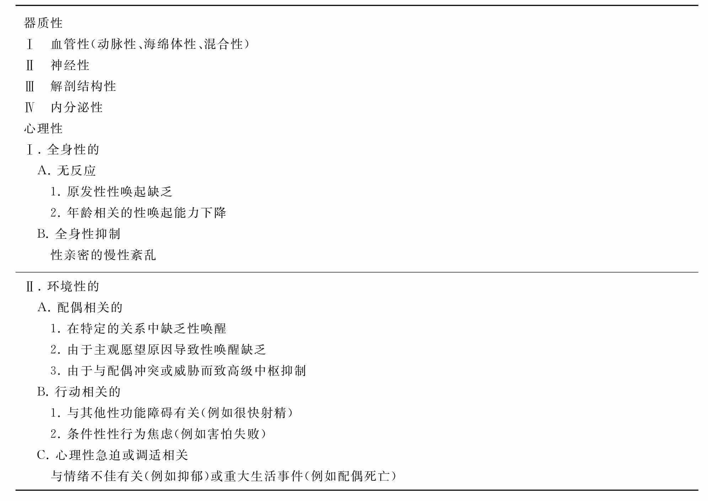

ED的发病与机体器质性和心理性因素密切相关。依据其病因和发病机制的不同，国际勃起功能障碍研究协会建立了ED的分类方法（见表7-1）。既往曾认为90%的ED是心理性的，但目前多数学者认为心理性和器质性的混合性因素是发生ED的最常见病因。
表7-1 男性勃起功能障碍的分类
心理性ED通常是由于紧张、压力、抑郁、焦虑或感情不和等精神心理因素引起的。性行为和阴茎勃起由下丘脑、边缘系统和大脑皮质控制。因此，兴奋性和抑制性的信息被传递到脊髓勃起中枢，进而诱发或抑制勃起。心理性ED的可能机制包括：中枢神经递质的失衡、大脑对脊髓勃起中枢的过度抑制、一氧化氮的释放减少、交感神经过度兴奋。
任何影响大脑、脊髓、海绵体和阴部神经功能的疾病或功能障碍都可引起ED。据估计，20%的ED患者病因是神经源性的。脊髓损伤的性质、部位和程度决定了勃起功能的状况。有95%的高位脊髓完全损伤患者保留有反射性勃起，但低位损伤者仅25%。与ED相关的脑部病变包括：帕金森氏病，中风，创伤，肿瘤，Shy-Drager综合征，外周神经病变，如糖尿病、长期嗜酒、维生素缺乏等，都可能导致神经纤维的神经递质释放减少，从而引起ED的发生。当控制阴茎勃起的神经受到创伤、手术、放疗损伤时，也会导致ED的出现。
许多内分泌疾病与ED的发生密切相关，如糖尿病、垂体功能低下、高泌乳素血症、甲状腺功能亢进或低下、垂体肿瘤、皮质醇增多症和性腺功能低下等。任何下丘脑-垂体轴的功能障碍都会导致性腺机能低下。促性腺激素分泌不足引起的性腺功能低下可以是先天性的，也可以由肿瘤、外伤引起；促性腺激素分泌增加引起的性腺功能低下与肿瘤、外伤、手术和腮腺炎后的睾丸炎相关。高泌乳素血症，不管由垂体腺瘤还是药物引起，常发生血循环中睾酮水平降低，与泌乳素水平增高抑制促性腺激素释放激素的分泌有关，能导致ED和性欲减退。
髂内动脉-海绵体动脉-螺旋动脉出现病变（如外伤或动脉硬化）时，就可能导致动脉阻塞，减少海绵体动脉血流和降低压力，从而延长达到最大勃起限度所需的时间，降低了勃起阴茎的硬度，导致ED的发生。大多数动脉性ED的患者，阴茎血管硬化是全身粥样硬化过程的一部分。Michael等发现冠状动脉硬化性心脏病和ED的发病率和发病年龄相一致。ED和心血管疾病具有相同的危险因素，例如高血压、糖尿病、高脂血症和吸烟。长距离骑车也是发生血管性和神经性ED的危险因素。
动脉病变据病变部位可以分为阴茎外和阴茎内动脉病变。阴茎外动脉病变有些可以采用手术治疗，包括阴部动脉、髂内动脉、髂总动脉和主动脉的病变、盆腔窃血综合征、盆腔创伤。阴茎外动脉病变可由动脉硬化、糖尿病等引起，目前尚无理想的手术治疗方法。
海绵体静脉闭塞不全是血管性ED的最常见原因。退行性病变（Peyronie病、老龄、糖尿病）或者白膜外伤，如阴茎折断，能破坏对白膜下静脉和导静脉的压迫。静脉闭塞不全可由多种病理生理过程引起：白膜退化改变、纤维弹性结构改变、小梁平滑肌松弛缺陷和静脉分流。糖尿病和动脉硬化的患者更易出现平滑肌萎缩、纤维增生和内皮功能缺陷，从而促进ED的发病。
海绵体静脉闭塞不全按病因可分为5类：1型，阴茎海绵体外的较大静脉病变（常见于先天性疾病）；2型，因阴茎白膜的弹性降低导致静脉的闭合不全（常见于Peyronie病和老化）；3型，因海绵体平滑肌的纤维化、退行性变等导致的松弛障碍，影响静脉闭合；4型，神经递质释放减少（常见于神经源性和心理性ED，内皮功能障碍）；5型，阴茎海绵体与尿道海绵体、阴茎头之间存在异常分流（常见于先天性疾病、创伤，或者阴茎异常勃起获得性静脉分流）。
许多药物都能导致ED，但其发病的确切机制尚不清楚，并且很少有专门针对药物引起ED的随机对照研究。与药物有关的性功能症状不仅仅限于对勃起功能的损害，可能还包含关于性欲、性兴奋和性欲高潮方面的主诉。通常来说，可能干扰神经中枢的神经内分泌功能或影响局部阴茎平滑肌的血管神经的药物都可能导致ED。参与调控性功能的中枢神经递质通路包括5-羟色胺能、肾上腺素能和多巴胺能神经。而抗抑郁药、抗精神病药、中枢作用降压药都可能影响这些神经，从而引起性功能的改变。选择性5羟色胺再摄取抑制剂是目前常用的一类治疗抑郁的药物，应用这些药物的患者约有50%的性功能发生了改变。β受体阻滞剂可以通过激活阴茎的α1受体而引起ED，相反，α1受体阻滞剂和血管紧张素Ⅱ的受体拮抗剂则可以改善勃起功能。噻嗪类利尿剂和非噻嗪类利尿剂都可能导致ED。其他可能导致ED的药物还有阿片样物质、抗反转录病毒药物和H2受体拮抗剂。
抗雄激素药物通过抑制雄激素的产生或拮抗雄激素受体的作用而发挥雄激素阻滞作用。雄激素被认为是通过调控中枢神经系统的雄激素受体而调控性行为的。雄激素缺乏对性活动的影响程度存在差异，可以从完全丧失到完全正常。5α还原酶抑制剂非那雄胺是临床上用于治疗良性前列腺增生的常用药物，它是对循环中睾酮水平和性功能影响最小的抗雄激素制剂。采用5mg/d非那雄胺治疗的患者约5%主诉有性欲下降和ED。雌激素和具有抗雄激素作用的药物，如酮康唑、LHRH激动剂、非甾体类抗雄激素药（比卡鲁胺）和甾体类抗雄激素药（环丙孕酮），都可能引起性功能的改变。
手术和创伤可以在不同平面影响控制勃起的神经和阴茎的血流，如脑和脊髓的损伤和手术，后腹膜淋巴结清扫术，前列腺癌根治术，腹会阴直肠切除术等，这些都可能导致ED的发生。Cunsolo等报告腹会阴直肠切除术后ED的发生率为59%；前列腺癌根治术后完全性ED和部分性ED的发生率分别为26%～100%和16%～48%；McDermott等发现179例因尿道狭窄而行尿道内切开术的患者，术后有4例（2.2%）发生ED；骨盆骨折后，有高达61%的患者出现不同程度的ED表现；脊髓损伤的患者中，骶髓上平面损伤后ED的发生率为5%～8%，而骶髓及其下平面损伤后的ED发生率高达60%～80%。
研究显示，吸烟与ED的发生密切相关。Mannino调查了4462例男性，年龄均在31～49岁，吸烟者ED发生率为3.7%，而非吸烟者为2.2%。MMAS研究发现，在心脏病患者中，吸烟者出现完全性ED的比率为56%，而未吸烟者为21%。在ED患者中，吸烟者和曾经吸烟者的比率为58.4%和81%，这一比例显著高于没有ED的人群中吸烟者的比例。研究发现，吸烟者的阴部内动脉、海绵体动脉有动脉硬化形成。吸烟对海绵体平滑肌的收缩作用可诱发血管收缩和阴茎静脉漏。另外，吸烟也是心血管疾病、糖尿病等与ED发生密切相关的疾病的危险因素。
小剂量的乙醇由于其扩张血管作用和抑制焦虑作用可改善勃起和提高性欲；但是大量的乙醇可引起中枢镇静作用，使性欲降低，甚至引起短暂的勃起功能障碍。在嗜酒者中，ED的发生率高达54%。慢性乙醇中毒导致肝功能障碍，使睾酮水平降低，雌二醇水平增加，还可引起多发神经病变，也可影响阴茎神经。
随着年龄的增长，男性的性功能逐渐降低，出现一系列改变，包括勃起潜伏期延长、硬度减低、缺少强有力的射精、精量减少和不应期较长。另有研究发现，勃起功能减退的老年男性睾酮水平降低而促性腺激素相对正常，表明下丘脑垂体轴功能障碍。
糖尿病与ED的发病密切相关。1型和2型糖尿病患者中，ED的发病率分别为32%和46%，并且糖尿病患者中ED的发病年龄较早，在30岁时ED的发病率约15%，60岁时上升到55%。MMAS研究发现，糖尿病患者ED发病率是无糖尿病者的3倍（分别为28%和9.6%）。研究显示，糖尿病可能通过影响下列因素引发ED：心理作用、中枢神经系统作用、雄激素分泌、外周神经活动、内皮细胞功能和平滑肌的收缩力。
心血管疾病，如高血压、动脉粥样硬化、高脂血症等常伴发ED。MMAS研究发现，在心脏病患者中ED的发病率为39%，未治疗的高血压患者的发病率为15%，都显著高于研究总体的ED发病率（9%）。在急性心梗的患者中，64%的患者存在不同程度的ED，在行冠脉手术的患者中，ED的发生率为57%。在高血压患者中发现，ED的发生率显著高于没有高血压的患者，并且前者ED的病情更重，随访研究发现，伴有ED的高血压患者出现心脑血管事件的风险更高。心血管疾病与ED发生密切相关的可能机制是血管病变导致阴茎的血流动力学异常。
研究显示，慢性肾衰竭患者中的ED发病率为20%～50%。接受透析治疗的慢性肾衰竭患者中严重ED的发生率是45%，并且随年龄的增长、合并糖尿病和未应用血管紧张素转换酶抑制剂而相应增加。对肾移植患者的研究发现，移植术后多数患者的勃起功能获得显著改善，这一研究证实了慢性肾衰竭与ED的发病密切相关。慢性肾衰竭引发ED的机制包括下丘脑垂体性腺轴的功能紊乱，高催乳素血症，动脉粥样硬化疾病和心理性因素等。
其他的疾病，如慢性肺疾病、肝硬化等也都能导致ED的发生。